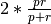

evaluate Package¶
evaluate Package¶
Basic module for the evaluation of algorithms.
acd Module¶
Evaluation methods for automatic cognate detection.
- lingpy.evaluate.acd.bcubes(lex, gold='cogid', test='lexstatid', loans=False, pprint=True)¶
Compute B-Cubed scores for test and reference datasets.
Parameters: lex : lingpy.compare.lexstat.LexStat
The LexStat class used for the computation. It should have two columns indicating cognate IDs.
gold : str (default=’cogid’)
The name of the column containing the gold standard cognate assignments.
test : str (default=’lexstatid’)
The name of the column containing the automatically implemented cognate assignments.
loans : bool (default=True)
If set to c{False}, loans (indicated by negative IDs in the gold standard) will be treated as separate cognates, otherwise, loans will be treated as cognates.
pprint : bool (default=True)
Print out the results
Returns: t : tuple
A tuple consisting of the precision, the recall, and the harmonic mean (F-scores).
Notes
B-Cubed scores were first described by Bagga1998 as part of an algorithm. Later on, Amigo2009 showed that they can also used as to compare cluster decisions. Hauer2011 applied the B-Cubed scores first to the task of automatic cognate detection.
- lingpy.evaluate.acd.diff(lex, gold='cogid', test='lexstatid', loans=False, pprint=True, filename='', tofile=True, fuzzy=False)¶
Write differences in classifications on an item-basis to file.
- lex : lingpy.compare.lexstat.LexStat
- The LexStat class used for the computation. It should have two columns indicating cognate IDs.
- gold : str (default=’cogid’)
- The name of the column containing the gold standard cognate assignments.
- test : str (default=’lexstatid’)
- The name of the column containing the automatically implemented cognate assignments.
- loans : bool (default=True)
- If set to c{False}, loans (indicated by negative IDs in the gold standard) will be treated as separate cognates, otherwise, loans will be treated as cognates.
- pprint : bool (default=True)
- Print out the results
- filename : str (default=’‘)
- Name of the output file. If not specified, it is identical with the name of the LexStat, but with the extension diff.
- tofile : bool (default=True)
- If set to c{False}, no data will be written to file, but instead, the data will be returned.
Returns: t : tuple
A nested tuple consisting of two further tuples. The first containing precision, recall, and harmonic mean (F-scores), the second containing the same values for the pair-scores.
Notes
If the tofile option is chosen, the results are written to a specific file with the extension diff. This file contains all cognate sets in which there are differences between gold standard and test sets. It also gives detailed information regarding false positives, false negatives, and the words involved in these wrong decisions.
- lingpy.evaluate.acd.pairs(lex, gold='cogid', test='lexstatid', loans=False, pprint=True)¶
Compute pair scores for the evaluation of cognate detection algorithms.
- lex : lingpy.compare.lexstat.LexStat
- The LexStat class used for the computation. It should have two columns indicating cognate IDs.
- gold : str (default=’cogid’)
- The name of the column containing the gold standard cognate assignments.
- test : str (default=’lexstatid’)
- The name of the column containing the automatically implemented cognate assignments.
- loans : bool (default=True)
- If set to c{False}, loans (indicated by negative IDs in the gold standard) will be treated as separate cognates, otherwise, loans will be treated as cognates.
- pprint : bool (default=True)
- Print out the results
Returns: t : tuple
A tuple consisting of the precision, the recall, and the harmonic mean (F-scores).
Notes
Pair-scores can be computed in different ways, with often different results. This variant follows the description by Bouchard-Cote2013.
alr Module¶
Module provides methods for the evaluation of automatic linguistic reconstruction analyses.
- lingpy.evaluate.alr.mean_edit_distance(wordlist, gold='proto', test='consensus', ref='cogid', tokens=True, classes=False, **keywords)¶
Function computes the edit distance between gold standard and test set.
Parameters: wordlist : ~lingpy.basic.wordlist.Wordlist
The wordlist object containing the data for a given analysis.
gold : str (default=”proto”)
The name of the column containing the gold-standard solutions.
test = “consensus” :
The name of the column containing the test solutions.
Returns: dist : float
The mean edit distance between gold and test reconstructions.
Notes
This function has an alias (“med”). Calling it will produce the same results.
- lingpy.evaluate.alr.med(wordlist, gold='proto', test='consensus', ref='cogid', tokens=True, classes=False, **keywords)¶
apa Module¶
Basic module for the comparison of automatic phonetic alignments.
- class lingpy.evaluate.apa.EvalMSA(gold, test)¶
Bases: builtins.object
Base class for the evaluation of automatic multiple sequence analyses.
Parameters: gold, test : MSA
The Multiple objects which shall be compared. The first object should be the gold standard and the second object should be the test set.
See also
Notes
Most of the scores which can be calculated with help of this class are standard evaluation scores in evolutionary biology. For a close description on how these scores are calculated, see, for example, Thompson1999, List2012, and :evobib:`Rosenberg2009b.
- c_score(mode=1)¶
Calculate the column (C) score.
Parameters: mode : { 1, 2, 3, 4 }
Indicate, which mode to compute. Select between:
- divide the number of common columns in reference and test alignment by the total number of columns in the test alignment (the traditional C score described in Thompson1999, also known as “precision” score in applications of information retrieval),
- divide the number of common columns in reference and test alignment by the total number of columns in the reference alignment (also known as “recall” score in applications of information retrieval),
- divide the number of common columns in reference and test alignment by the average number of columns in reference and test alignment, or
- combine the scores of mode 1 and mode 2 by computing their F-score, using the formula , where p is the precision (mode 1) and r is the recall (mode 2).
Returns: score : float
The C score for reference and test alignments.
See also
Notes
The different c-
- check_swaps()¶
Check for possibly identical swapped sites.
Returns: swap : { -2, -1, 0, 1, 2 }
Information regarding the identity of swap decisions is coded by integers, whereas
- 1 – indicates that swaps are detected in both gold standard and
testset, whereas a negative value indicates that the positions are not identical,
- 2 – indicates that swap decisions are not identical in gold
standard and testset, whereas a negative value indicates that there is a false positive in the testset, and
- 0 – indicates that there are no swaps in the gold standard and the
testset.
- jc_score()¶
Calculate the Jaccard (JC) score.
Returns: score : float
The JC score.
See also
lingpy.test.evaluate.EvalPSA.jc_score
Notes
The Jaccard score (see List2012) is calculated by dividing the size of the intersection of residue pairs in reference and test alignment by the size of the union of residue pairs in reference and test alignment.
- r_score()¶
Compute the rows (R) score.
Returns: score : float
The PIR score.
See also
Notes
The R score is the number of identical rows (sequences) in reference and test alignment divided by the total number of rows.
- sp_score(mode=1)¶
Calculate the sum-of-pairs (SP) score.
Parameters: mode : { 1, 2, 3 }
Indicate, which mode to compute. Select between:
- divide the number of common residue pairs in reference and test alignment by the total number of residue pairs in the test alignment (the traditional SP score described in Thompson1999, also known as “precision” score in applications of information retrieval),
- divide the number of common residue pairs in reference and test alignment by the total number of residue pairs in the reference alignment (also known as “recall” score in applications of information retrieval),
- divide the number of common residue pairs in reference and test alignment by the average number of residue pairs in reference and test alignment.
Returns: score : float
The SP score for gold standard and test alignments.
See also
Notes
The SP score (see Thompson1999) is calculated by dividing the number of identical residue pairs in reference and test alignment by the total number of residue pairs in the reference alignment.
- class lingpy.evaluate.apa.EvalPSA(gold, test)¶
Bases: builtins.object
Base class for the evaluation of automatic pairwise sequence analyses.
Parameters: gold, test : lingpy.align.sca.PSA
The Pairwise objects which shall be compared. The first object should be the gold standard and the second object should be the test set.
See also
Notes
Moste of the scores which can be calculated with help of this class are standard evaluation scores in evolutionary biology. For a close description on how these scores are calculated, see, for example, Thompson1999, List2012, and Rosenberg2009b.
- c_score()¶
Calculate column (C) score.
Returns: score : float
The C score for reference and test alignments.
See also
lingpy.test.evaluate.EvalMSA.c_score
Notes
The C score, as it is described in Thompson1999, is calculated by dividing the number of columns which are identical in the gold standarad and the test alignment by the total number of columns in the test alignment.
- diff(**keywords)¶
Write all differences between two sets to a file.
Parameters: filename : str (default=’eval_psa_diff’)
Default
- jc_score()¶
Calculate the Jaccard (JC) score.
Returns: score : float
The JC score.
See also
lingpy.test.evaluate.EvalMSA.jc_score
Notes
The Jaccard score (see List2012) is calculated by dividing the size of the intersection of residue pairs in reference and test alignment by the size of the union of residue pairs in reference and test alignment.
- r_score(mode=1)¶
Compute the percentage of identical rows (PIR) score.
Parameters: mode : { 1, 2 }
Select between mode 1, where all sequences are compared with each other, and mode 2, where only whole alignments are compared.
Returns: score : float
The PIR score.
See also
Notes
The PIR score is the number of identical rows (sequences) in reference and test alignment divided by the total number of rows.
- sp_score()¶
Calculate the sum-of-pairs (SP) score.
Returns: score : float
The SP score for reference and test alignments.
See also
lingpy.test.evaluate.EvalMSA.sp_score